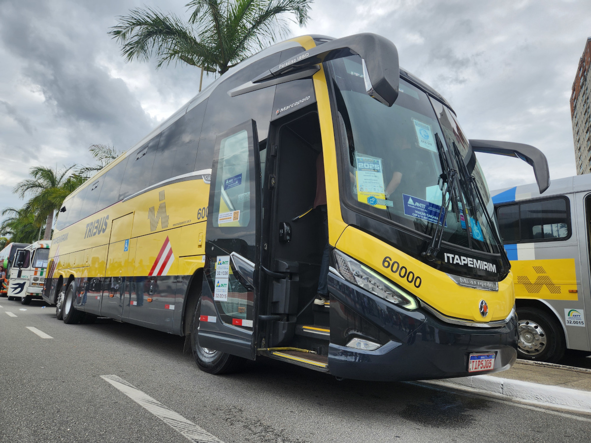
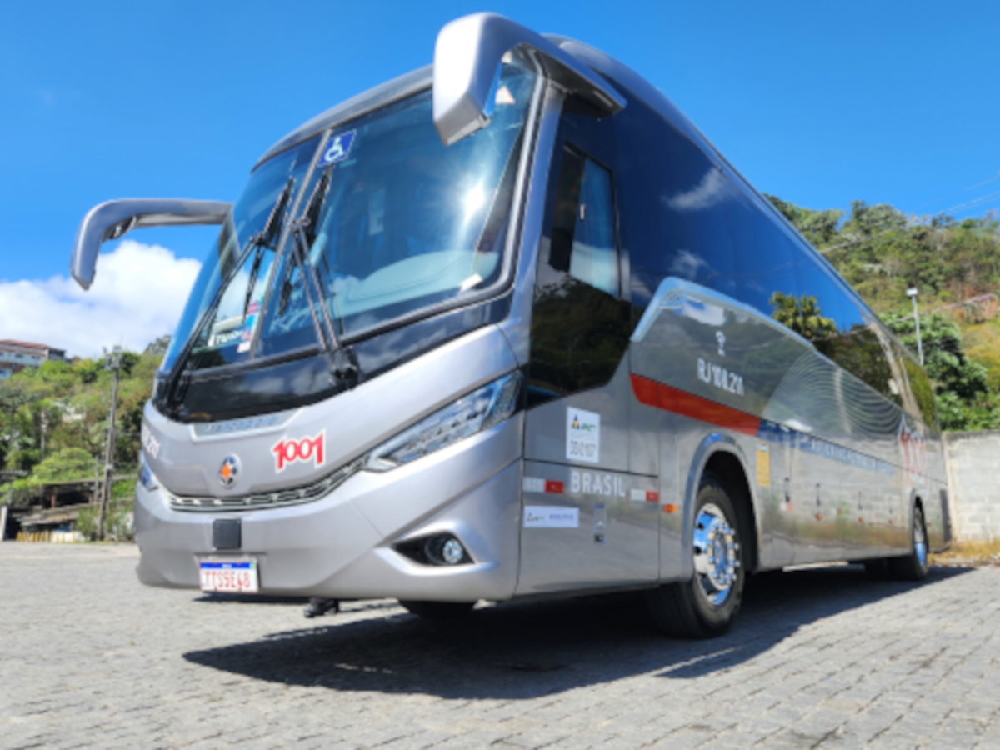
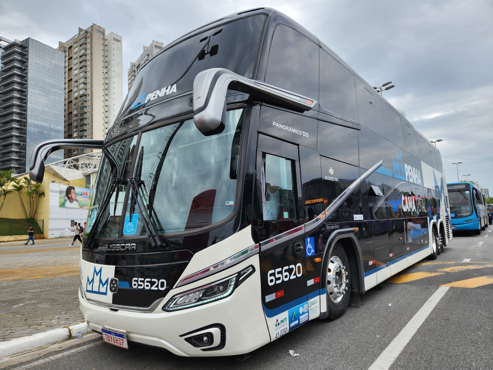

Gigantes do Trecho: Conheça as melhores operadoras do eixo Rio de Janeiro – São Paulo
As Principais opções no trecho Rio de Janeiro – São Paulo
Ver mais ↓
As Principais opções no trecho Rio de Janeiro – São Paulo
Ver mais ↓

